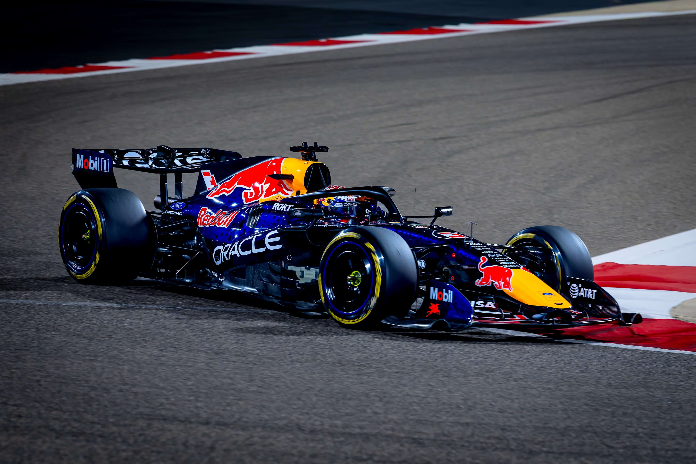
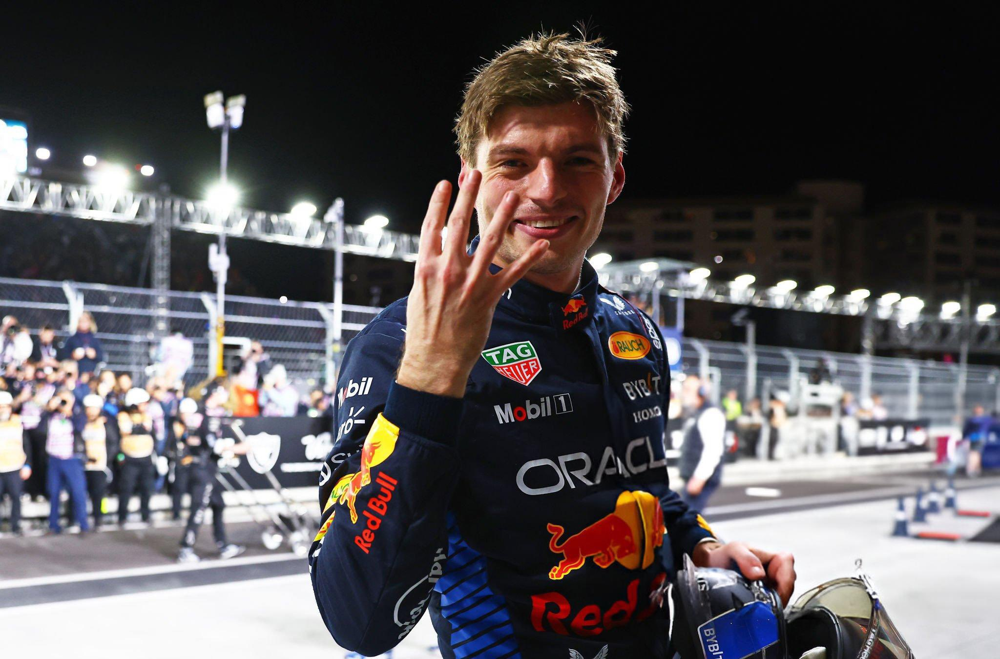

How I Became a Fan
My first introduction to motorsport came from watching my dad follow Formula 1 and MotoGP back in the early 2010s. At the time, I liked the Red Bull Formula 1 team mostly because of their red and blue colors, which happened to be my favorites. I also became attached to the team because Sebastian Vettel and Daniel Ricciardo raced for them, and both were such likeable personalities. I became a diehard fan during the 2021 championship battle, which came down to the very last race (Verstappen rightfully won the championship).
Beyond the racing itself, I am fascinated by the scientific and engineering side of the sport. The scale of Formula 1 operations, the races held around the world, the amount of data being analyzed every second, and the decisions made from that data are a huge part of what makes the sport so exciting to me. It also makes watching feel interactive, because fans are constantly making their own predictions, judging strategy calls, and trying to understand what each team is seeing.
Favorite Team: Oracle Red Bull Racing
Red Bull has always been my team. Partly because they consistently make some of the best-looking cars on the grid, and partly because the whole story is hilarious when you think about it: an energy drink company somehow decided to enter Formula 1 and became one of the most successful teams in the sport.
For 2026, Red Bull also took another huge step by developing its own power unit in partnership with Ford. The fact that an energy drink company can go from simply sponsoring extreme sports to building its own Formula 1 engine is still kind of ridiculous in the best way possible. Add Max Verstappen to the equation and it becomes very difficult not to support them. Also, I mean, just look at the car.

Favorite Driver: Max "The Flying Dutchman" Verstappen
When Mercedes ruled Formula 1 in the late 2010s, Max was already there making himself impossible to ignore. The moment Red Bull finally gave him a car capable of fighting for a championship, he ended Mercedes' run and won the 2021 title in one of the most dramatic seasons the sport has ever seen.
Then came 2023, when he basically turned Formula 1 into his own personal highlight reel: 19 wins in 22 races and a record 10 victories in a row. It was the kind of season where seeing Max at the front stopped being surprising and started feeling inevitable, even annoying for many.
More than the championships or the records, the biggest reason Max is my favorite driver is that he feels like a real person who stays true to himself. He is a racer in the purest sense of the word. It does not seem to matter whether it is Formula 1, endurance racing, GT racing, or just getting into something with four wheels and seeing how fast he can make it go. Put him in a car and his talent always shows. Racing does not feel like something he happens to do for a living; it feels like what he was made to do.
His personality is a big part of it too. He is funny because he is genuine. He does not seem interested in putting on a different personality for the media or saying whatever sounds best in an interview. What you see is basically what you get, and I think that makes him much more likeable. Whether he is being blunt, joking around, or just talking about racing, he comes across as the same person every time.
